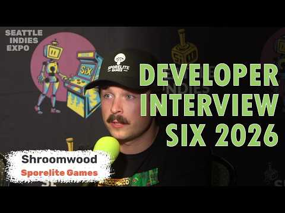
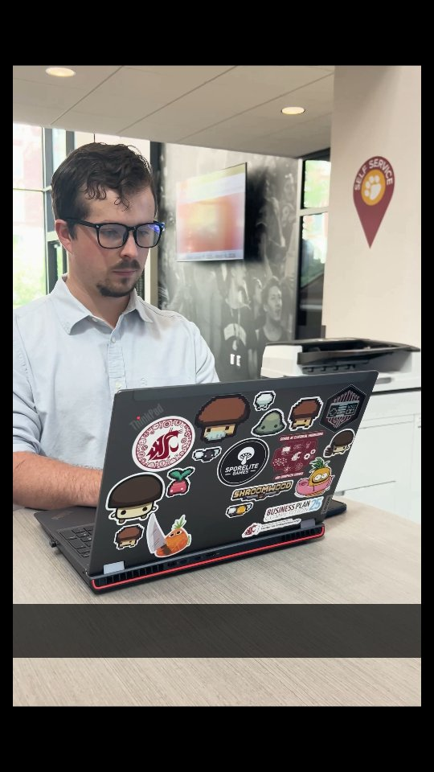

DEVELOPER. GAME MAKER. CURIOUS HUMAN.
A little code.
A lot of curiosity.
Hey, I’m Martin
I make games, build useful things, and follow ideas
just to see where they go.
01 / THE THINGS I MAKE
Made with curiosity.
A collection of games, tools, and side quests.
Some useful. Some just for the fun of it.
02 / THE PERSON BEHIND THE PROJECTS
Hi again.
I’m Martin.
I got into programming by teaching myself game development in high school. I stuck around for the satisfying problems, the creative possibilities, and the feeling of making something work.
Since then, that curiosity has taken me through computer science at Washington State University, software R&D at SEL, and a whole lot of game development.
I also co-founded WSU’s Game Development Club. Turns out, making things is even better when you help other people make things, too.
03 / VIDEOS, STORIES & OTHER APPEARANCES
Out in the world.

YOUTUBEINTERVIEW / 2026
Talking Shroomwood
at Seattle Indies Expo.
A developer interview from SIX 2026, shared by Sporelite Games.
Watch the interview
FACEBOOKSTUDENT SPOTLIGHT / VIDEO
A little look
behind the projects.
My student spotlight from WSU Voiland College of Engineering and Architecture.
Watch the spotlight